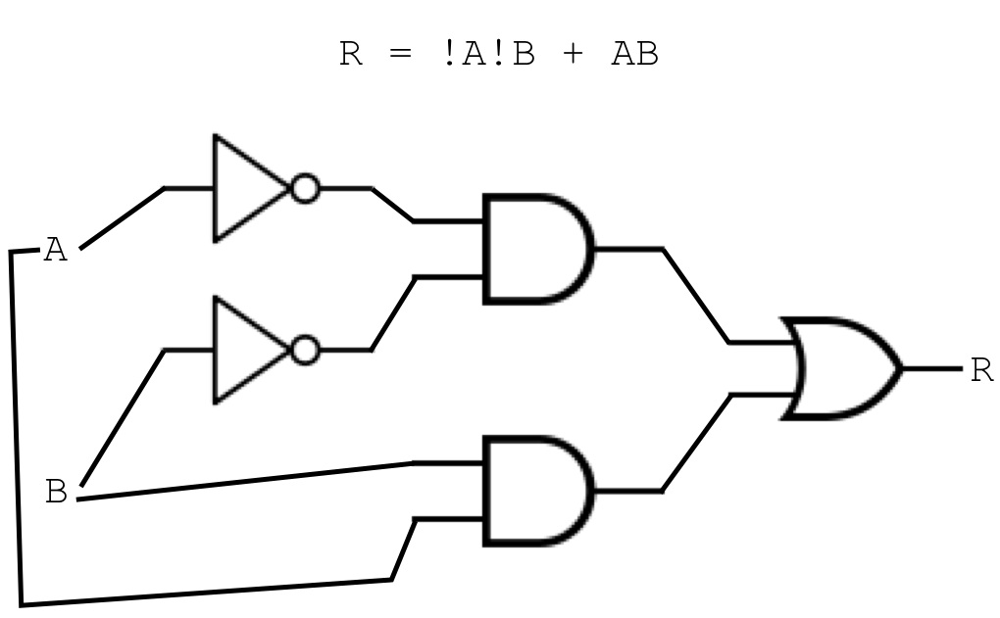
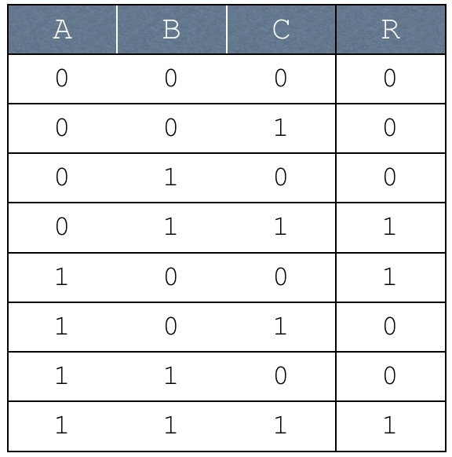
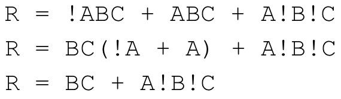
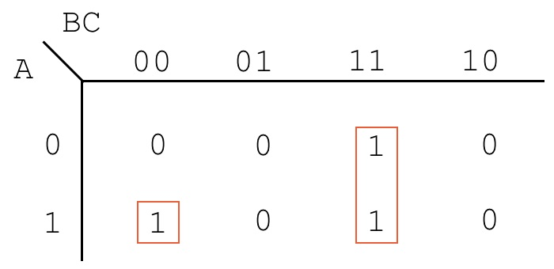
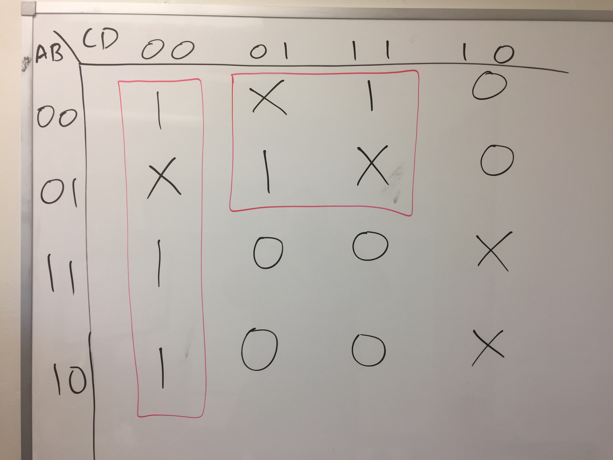

if ($t0 == 0) {
$t1 = 5;
}
bne $t0, $zero, after_if li $t1, 5 after_if:
Convert the following C-like code into MIPS assembly. The names of the variables reflect which registers must be used for the MIPS assembly. Do not assume any initial values for the registers. You may use additional registers.
if ($t0 < 5) {
$t1 = 0;
} else {
$t1 = 1;
}
slti $t3, $t0, 5 beq $t3, $zero, else_branch li $t1, 0 j after_if else_branch: li $t1, 1 after_if:
Convert the following C-like code into MIPS assembly. The names of the variables reflect which registers must be used for the MIPS assembly. Do not assume any initial values for the registers. You may use additional registers.
if ($t0 == 0 || $t1 == 1) {
$t2 = 5;
} else {
$t2 = 6;
}
beq $t0, $zero, true_branch li $t3, 1 beq $t1, $t3, true_branch li $t2, 6 j after_if true_branch: li $t2, 5 after_if:
Convert the following Java/C-like code into ARM assembly. The names of the variables reflect which registers must be used for the ARM assembly.
if ($t0 &tg;= 0 && $t0 < $t1) {
$t2 = 9;
} else {
$t2 = 0;
}
# !($t0 >= 0 && $t0 < $t1) ==> $t0 < 0 || $t0 >= $t1 slt $t3, $t0, $zero # $t0 < 0? bne $t3, $zero, else_branch # if yes, jump to else # $t0 >= $t1 ==> !($t0 < $t1) slt $t3, $t0, $t1 # $t0 < $t1? beq $t3, $zero, else_branch # if not, jump to else li $t2, 9 j after_if else_branch: li $t2, 0 after_if:
Write a MIPS program that will read integers from the user until 0 is input. Once 0 is input, the program should print the sum of all the numbers read in. As a hint, you should track a running sum, instead of trying to store all the numbers the user read in. If the user immediately inputs a 0, then the running sum should be 0.
.text
main:
# $t0: running sum
# $t1: input number
li $t0, 0
# $t1 = readNum()
# while ($t1 != 0) {
# $t0 = $t0 + $t1
# $t1 = readNum()
# }
# print($t0)
li $v0, 5
syscall
move $t1, $v0
loop_begin:
beq $t1, $zero, loop_end
add $t0, $t0, $t1
li $v0, 5
syscall
move $t1, $v0
j loop_begin
loop_end:
move $a0, $t0
li $v0, 1
syscall
li $v0, 10
syscall
Convert the following C-like code into MIPS assembly. The names of the variables reflect which registers must be used for the MIPS assembly. Do not assume any initial values for the registers. You may use additional registers.
$t0 = 10
$t1 = 1
$t2 = 0
while ($t1 <= $t0) {
$t2 = $t2 + $t1;
$t1++;
}
.text main: li $t0, 10 li $t1, 1 li $t2, 0 loop_begin: # $t1 <= $t0 ==> !($t1 > $t0) ==> !($t0 < $t1) slt $t3, $t0, $t1 # $t3 == 0 if $t0 < $t1, meaning !($t1 > $t0), meaning $t1 <= $t0 # $t3 == 1 if !($t1<= $t0) bne $t3, $zero, loop_end add $t2, $t2, $t1 addi $t1, $t1, 1 j loop_begin loop_end: li $v0, 10 syscall
Write a MIPS program that will read in an integer, and will print one of two things:
.data is_set_string: .asciiz "Bit 2 is set\n" is_not_set_string: .asciiz "Bit 2 is not set\n" .text main: # $t0: the number # read in the integer li $v0, 5 syscall move $t0, $v0 # mask out all other bits andi $t0, $t0, 0x4 beq $t0, $zero, is_not_set la $a0, is_set_string j after_if is_not_set: la $a0, is_not_set_string after_if: # print the string li $v0, 4 syscall # exit the program li $v0, 10 syscall
Convert the following C-like code into MIPS assembly. The names of the variables reflect which registers must be used for the MIPS assembly. Do not assume any initial values for the registers. You may use additional registers.
int s0 = 82; int s1 = s0 >> 2; int s2 = s1 * 20; int s3 = s2 + 7; int s4 = s3 - 24; int s5 = s4 / 3;
main: li $s0, 82 # int s0 = 82; sll $s1, $s0, 2 # int s1 = s0 << 2; li $t0, 20 # int s2 = s1 * 20 (part 1 of 3) mult $s1, $t0 # (part 2 of 3) mflo $s2 # (part 3 of 3) addi $s3, $s2, 7 # int s3 = s2 + 7 li $t1, 24 # int s4 = s3 - 24 (part 1 of 2) sub $s4, $s3, $t1 # (part 2 of 2) li $t2, 3 # int s5 = s4 / 3 (part 1 of 3) div $s4, $t2 # (part 2 of 3) mflo $s5 # (part 3 of 3
Convert the following C-like code into MIPS assembly. The names of the variables reflect which registers must be used for the MIPS assembly. Do not assume any initial values for the registers. You may use additional registers. The portions in <<>> will require you to use QtSpim functionality. You do not need to exit the program properly.
int s0 = <<read integer from the user>>;
int s1 = 2;
if (s0 < 7) {
s1 = 3;
}
<<print integer s1>>
if (r2 < r3 && r3 < r4) {
r5 = r6;
} else {
r6 = r5;
}
main: # read integer from user li $v0, 5 syscall # save integer from user move $s0, $v0 # store 2 in s1 li $s1, 2 # check if s0 < 7 li $t0, 7 slt $t1, $s0, $t0 # if it's NOT less than 7, skip the body of the if beq $t1, $zero, printmsg # we didn't branch, meaning s0 < 7 li $s1, 3 printmsg: # print s1 li $v0, 1 move $a0, $s1 syscall
Convert the following C-like code into MIPS assembly. The names of the variables reflect which registers must be used for the MIPS assembly. Do not assume any initial values for the registers. You may use additional registers. The portions in <<>> will require you to use QtSpim functionality. You do not need to exit the program properly.
int s0 = <<read integer from the user>>;
int s1 = 2;
if (s0 < 7) {
s1 = 3;
} else {
s1 = s0 + s0;
}
<<print integer s1>>
main: # read in the integer from the user, and initialize s1 li $v0, 5 syscall move $s0, $v0 li $s1, 2 # check if $s0 < 7 li $t0, 7 slt $t1, $s0, $t0 # jump to the else branch if this isn't true beq $t1, $zero, else_branch # fall through to the true branch li $s1, 3 j print else_branch: add $s1, $s0, $s0 # fall through to the print print: li $v0, 1 move $a0, $s0 syscall
Convert the following C-like code into MIPS assembly. The names of the variables reflect which registers must be used for the MIPS assembly. Do not assume any initial values for the registers. You may use additional registers. The portions in <<>> will require you to use QtSpim functionality. You do not need to exit the program properly.
int s0;
int s1 = 1;
for (s0 = 0; s0 < 10; s0++) {
s1 = s1 * s0;
}
main: # initialize variables li $s0, 0 li $s1, 2 loop: # check loop condition li $t0, 10 slt $t1, $s0, $t0 # s0 < 10? beq $t1, $zero, loop_exit # if not, jump to loop_exit # do body of the loop mult $s1, $s0 mflo $s1 # increment counter addi $s0, $s0, 1 j loop loop_exit: # this is past the loop

An OR gate.

An AND gate.

A NOT gate.
!A refers to the negation of variable A, and so on:
R = !A!B + AB
R = !ABC + ABC + A!B!C
Using the above equation, do the following:
- Write it as a truth table:
 - Simplify it using boolean algebra:
 - Simplify it using a Karnaugh map:
R = A!B!C + BC
| A | B | C | D | U |
|---|---|---|---|---|
| 0 | 0 | 0 | 0 | |
| 0 | 0 | 0 | 1 | |
| 0 | 0 | 1 | 0 | |
| 0 | 0 | 1 | 1 | |
| 0 | 1 | 0 | 0 | |
| 0 | 1 | 0 | 1 | |
| 0 | 1 | 1 | 0 | |
| 0 | 1 | 1 | 1 | |
| 1 | 0 | 0 | 0 | |
| 1 | 0 | 0 | 1 | |
| 1 | 0 | 1 | 0 | |
| 1 | 0 | 1 | 1 | |
| 1 | 1 | 0 | 0 | |
| 1 | 1 | 0 | 1 | |
| 1 | 1 | 1 | 0 | |
| 1 | 1 | 1 | 1 |
Using the above truth table, write out the following:
-
The unoptimized sum-of-products equation, skipping over don't cares
U = !A!B!C!D + !A!BCD + !AB!CD + A!B!C!D + AB!C!D - A Karnaugh map, along with boxes which exploit don't cares where appropriate.
-
An optimized sum-of-products equation, derived from the Karnaugh map created in the previous step.
U = !C!D + !AD
